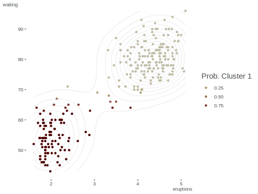
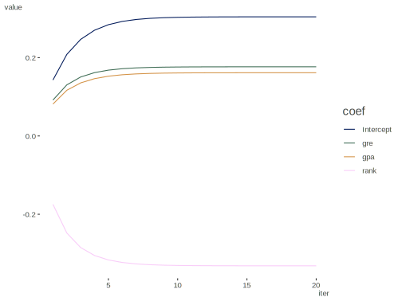

Expectation-Maximization
Mixture Model
The following code is based on algorithms noted in Murphy, 2012 Probabilistic Machine Learning, specifically, Chapter 11, section 4.
Data Setup
This example uses Old Faithful geyser eruptions. This is only a univariate mixture for either eruption time or wait time. The next example will be doing both variables, i.e. multivariate normal. ‘Geyser’ is supposedly more accurate, though seems to have arbitrarily assigned some duration values. See this source also, but that only has intervals. Some July 1995 data is available.
library(tidyverse)
# faithful data set is in base R
data(faithful)
head(faithful) eruptions waiting
1 3.600 79
2 1.800 54
3 3.333 74
4 2.283 62
5 4.533 85
6 2.883 55eruptions = as.matrix(faithful[, 1, drop = FALSE])
wait_times = as.matrix(faithful[, 2, drop = FALSE])Function
The fitting function.
em_mixture <- function(
params,
X,
clusters = 2,
tol = .00001,
maxits = 100,
showits = TRUE
) {
# Arguments are starting parameters (means, covariances, cluster probability),
# data, number of clusters desired, tolerance, maximum iterations, and whether
# to show iterations
# Starting points
N = nrow(X)
nams = names(params)
mu = params$mu
var = params$var
probs = params$probs
# Other initializations
# initialize cluster 'responsibilities', i.e. probability of cluster
# membership for each observation i
ri = matrix(0, ncol = clusters, nrow = N)
it = 0
converged = FALSE
if (showits) # Show iterations
cat(paste("Iterations of EM:", "\n"))
while ((!converged) & (it < maxits)) {
probsOld = probs
muOld = mu
varOld = var
riOld = ri
# E
# Compute responsibilities
for (k in 1:clusters){
ri[, k] = probs[k] * dnorm(X, mu[k], sd = sqrt(var[k]), log = FALSE)
}
ri = ri/rowSums(ri)
# M
rk = colSums(ri) # rk is the weighted average cluster membership size
probs = rk/N
mu = (t(X) %*% ri) / rk
var = (t(X^2) %*% ri) / rk - mu^2
# could do mu and var via log likelihood here, but this is more straightforward
parmlistold = rbind(probsOld, muOld, varOld)
parmlistcurrent = rbind(probs, mu, var)
it = it + 1
# if showits true, & it =1 or divisible by 5 print message
if (showits & it == 1 | it%%5 == 0)
cat(paste(format(it), "...", "\n", sep = ""))
converged = max(abs(parmlistold - parmlistcurrent)) <= tol
}
clust = which(round(ri) == 1, arr.ind = TRUE) # create cluster membership
clust = clust[order(clust[, 1]), 2] # order according to row rather than cluster
out = list(
probs = probs,
mu = mu,
var = var,
resp = ri,
cluster = clust
)
out
} Estimation
Starting parameters require mean, variance and class probability. Note that starting values for mean must be within the data range or it will break.
start_values_1 = list(mu = c(2, 5),
var = c(1, 1),
probs = c(.5, .5))
start_values_2 = list(mu = c(50, 90),
var = c(1, 15),
probs = c(.5, .5)) mix_erupt = em_mixture(start_values_1, X = eruptions, tol = 1e-8)Iterations of EM:
1...
5...
10...
15...
20...
25...
30...mix_waiting = em_mixture(start_values_2, X = wait_times, tol = 1e-8)Iterations of EM:
1...
5...
10...
15...
20...
25...
30...
35...
40...
45...
50...
55...Comparison
Compare to flexmix package results.
library(flexmix)
flex_erupt = flexmix(eruptions ~ 1,
k = 2,
control = list(tolerance = 1e-8, iter.max = 100))
flex_wait = flexmix(wait_times ~ 1,
k = 2,
control = list(tolerance = 1e-8, iter.max = 100))The following provides means, variances and probability of group membership. Note that the cluster label is arbitrary so cluster 1 for one model may be cluster 2 in another.
Eruptions
First we’ll compare results on the eruptions variable.
mean_var = rbind(mix_erupt$mu, sqrt(mix_erupt$var))
rownames(mean_var) = c('means', 'variances')
colnames(mean_var) = c('cluster 1', 'cluster 2')
mean_var_flex = parameters(flex_erupt)
rownames(mean_var_flex) = c('means', 'variances')
colnames(mean_var_flex) = c('cluster 1 flex', 'cluster 2 flex')
prob_membership = mix_erupt$probs
prob_membership_flex = flex_erupt@size / sum(flex_erupt@size)
list(
params = cbind(mean_var, mean_var_flex),
clusterpobs = cbind(prob_membership, prob_membership_flex)
)$params
cluster 1 cluster 2 cluster 1 flex cluster 2 flex
means 2.0186078 4.2733434 2.0186378 4.2733671
variances 0.2356218 0.4370631 0.2361087 0.4378364
$clusterpobs
prob_membership prob_membership_flex
1 0.3484046 0.3492647
2 0.6515954 0.6507353Waiting
Now we compare the result for waiting times.
mean_var = rbind(mix_waiting$mu, sqrt(mix_waiting$var))
rownames(mean_var) = c('means', 'variances')
colnames(mean_var) = c('cluster 1', 'cluster 2')
mean_var_flex = parameters(flex_wait)
rownames(mean_var_flex) = c('means', 'variances')
colnames(mean_var_flex) = c('cluster 1 flex', 'cluster 2 flex')
prob_membership = mix_waiting$probs
prob_membership_flex = flex_wait@size / sum(flex_wait@size)
list(
params = cbind(mean_var, mean_var_flex),
clusterpobs = cbind(prob_membership, prob_membership_flex)
)$params
cluster 1 cluster 2 cluster 1 flex cluster 2 flex
means 54.614856 80.091069 54.616631 80.090988
variances 5.871219 5.867734 5.884843 5.879324
$clusterpobs
prob_membership prob_membership_flex
1 0.3608861 0.3639706
2 0.6391139 0.6360294Visualization
Points are colored by class membership, followed by the probability of being in cluster 1.

Supplemental Example
This uses the MASS version (reversed columns). These don’t look even remotely the same data on initial inspection- geyser is even more rounded and of opposite conclusion. Turns out geyser is offset by 1, such that duration 1 should be coupled with waiting 2 and on down. Still the rounding at 2 and 4 (and whatever division was done on duration) makes this fairly poor data.
I’ve cleaned this up a little bit in case someone wants to play with it for additional practice, but it’s not evaluated.
data(geyser, package = 'MASS')
geyser = data.frame(duration = geyser$duration[-299], waiting = geyser$waiting[-1])
# compare to faithful
library(patchwork)
qplot(data = faithful, x = eruptions, y = waiting, alpha = I(.25)) /
qplot(data = geyser, x = duration, y = waiting, alpha = I(.25))
X3 = matrix(geyser[,1])
X4 = matrix(geyser[,2])
# MASS version
test3 = em_mixture(start_values_1, X = X3, tol = 1e-8)
test4 = em_mixture(start_values_2, X = X4, tol = 1e-8)
flexmod3 = flexmix(X3 ~ 1,
k = 2,
control = list(tolerance = 1e-8, iter.max = 100))
flexmod4 = flexmix(X4 ~ 1,
k = 2,
control = list(tolerance = 1e-8, iter.max = 100))
# note variability differences compared to faithful dataset
# Eruptions/Duration
mean_var = rbind(test3$mu, sqrt(test3$var))
rownames(mean_var) = c('means', 'variances')
mean_var_flex = parameters(flexmod3)
rownames(mean_var_flex) = c('means', 'variances')
prob_membership = test3$probs
prob_membership_flex = flexmod3@size / sum(flexmod3@size)
list(
params = cbind(mean_var, mean_var_flex),
clusterpobs = cbind(prob_membership, prob_membership_flex)
)
# Waiting
mean_var = rbind(test4$mu, sqrt(test4$var))
rownames(mean_var) = c('means', 'variances')
mean_var_flex = parameters(flexmod4)
rownames(mean_var_flex) = c('means', 'variances')
prob_membership = test4$probs
prob_membership_flex = flexmod4@size / sum(flexmod4@size)
list(
params = cbind(mean_var, mean_var_flex),
clusterpobs = cbind(prob_membership, prob_membership_flex)
)
# Some plots
library(ggplot2)
qplot(x = eruptions, y = waiting, data = faithful)
ggplot(aes(x = eruptions, y = waiting), data = faithful) +
geom_point(aes(color = factor(mix_waiting$cluster)))
ggplot(aes(x = eruptions, y = waiting), data = faithful) +
geom_point(aes(color = mix_waiting$resp[, 1]))Source
Original code available at https://github.com/m-clark/Miscellaneous-R-Code/blob/master/ModelFitting/EM%20Examples/EM%20Mixture.R
Multivariate Mixture Model
The following code is based on algorithms noted in Murphy, 2012 Probabilistic Machine Learning. Specifically, Chapter 11, section 4.
Function
This estimating function will be used for both examples.
em_mixture <- function(
params,
X,
clusters = 2,
tol = .00001,
maxits = 100,
showits = TRUE
) {
# Arguments are
# params: starting parameters (means, covariances, cluster probability)
# X: data
# clusters: number of clusters desired
# tol: tolerance
# maxits: maximum iterations
# showits: whether to show iterations
require(mvtnorm)
# Starting points
N = nrow(X)
mu = params$mu
var = params$var
probs = params$probs
# initializations
# cluster 'responsibilities', i.e. probability of cluster membership for each
# observation i
ri = matrix(0, ncol=clusters, nrow=N)
ll = 0 # log likelihood
it = 0 # iteration count
converged = FALSE # convergence
# Show iterations if showits == true
if (showits)
cat(paste("Iterations of EM:", "\n"))
while (!converged & it < maxits) {
probsOld = probs
# muOld = mu # Use direct values or loglike for convergence check
# varOld = var
llOld = ll
riOld = ri
### E
# Compute responsibilities
for (k in 1:clusters){
ri[,k] = probs[k] * dmvnorm(X, mu[k, ], sigma = var[[k]], log = FALSE)
}
ri = ri/rowSums(ri)
### M
rk = colSums(ri) # rk is weighted average cluster membership size
probs = rk/N
for (k in 1:clusters){
varmat = matrix(0, ncol = ncol(X), nrow = ncol(X)) # initialize to sum matrices
for (i in 1:N){
varmat = varmat + ri[i,k] * X[i,]%*%t(X[i,])
}
mu[k,] = (t(X) %*% ri[,k]) / rk[k]
var[[k]] = varmat/rk[k] - mu[k,]%*%t(mu[k,])
ll[k] = -.5*sum( ri[,k] * dmvnorm(X, mu[k,], sigma = var[[k]], log = TRUE) )
}
ll = sum(ll)
# compare old to current for convergence
parmlistold = c(llOld, probsOld) # c(muOld, unlist(varOld), probsOld)
parmlistcurrent = c(ll, probs) # c(mu, unlist(var), probs)
it = it + 1
# if showits true, & it =1 or modulo of 5 print message
if (showits & it == 1 | it%%5 == 0)
cat(paste(format(it), "...", "\n", sep = ""))
converged = min(abs(parmlistold - parmlistcurrent)) <= tol
}
clust = which(round(ri) == 1, arr.ind = TRUE) # create cluster membership
clust = clust[order(clust[,1]), 2] # order accoring to row rather than cluster
list(
probs = probs,
mu = mu,
var = var,
resp = ri,
cluster = clust,
ll = ll
)
} Example 1: Old Faithful
This example uses Old Faithful geyser eruptions as before. This is can be compared to the univariate code from the other chapter. See also http://www.geyserstudy.org/geyser.aspx?pGeyserNo=OLDFAITHFUL
Data Setup
library(tidyverse)
data("faithful")Estimation
Create starting values and estimate.
mustart = rbind(c(3, 60), c(3, 60.1)) # must be at least slightly different
covstart = list(cov(faithful), cov(faithful))
probs = c(.01, .99)
# params is a list of mu, var, and probs
starts = list(mu = mustart, var = covstart, probs = probs) mix_faithful = em_mixture(
params = starts,
X = as.matrix(faithful),
clusters = 2,
tol = 1e-12,
maxits = 1500,
showits = TRUE
)Iterations of EM:
1...
5...
10...
15...
20...
25...
30...
35...
40...
45...
50...
55...
60...
65...
70...
75...
80...str(mix_faithful)List of 6
$ probs : num [1:2] 0.356 0.644
$ mu : num [1:2, 1:2] 2.04 4.29 54.48 79.97
$ var :List of 2
..$ : num [1:2, 1:2] 0.0692 0.4352 0.4352 33.6973
.. ..- attr(*, "dimnames")=List of 2
.. .. ..$ : NULL
.. .. ..$ : chr [1:2] "eruptions" "waiting"
..$ : num [1:2, 1:2] 0.17 0.941 0.941 36.046
.. ..- attr(*, "dimnames")=List of 2
.. .. ..$ : NULL
.. .. ..$ : chr [1:2] "eruptions" "waiting"
$ resp : num [1:272, 1:2] 2.59e-09 1.00 8.42e-06 1.00 1.00e-21 ...
$ cluster: int [1:272] 2 1 2 1 2 1 2 2 1 2 ...
$ ll : num 477Visualize.


Comparison
Compare to mclust results. Options are set to be more similar to the settings demonstrated.
library(mclust)
mix_mclust = mclust::Mclust(
faithful[, 1:2],
2,
modelNames = 'VVV',
control = emControl(tol = 1e-12)
)
detach(package:mclust)
# str(mix_mclust, 1)Compare means.
t(mix_faithful$mu) [,1] [,2]
[1,] 2.036388 4.289662
[2,] 54.478516 79.968115mix_mclust$parameters$mean [,1] [,2]
eruptions 4.289662 2.036388
waiting 79.968115 54.478517Compare variances.
mix_faithful$var[[1]]
eruptions waiting
[1,] 0.06916767 0.4351676
[2,] 0.43516762 33.6972821
[[2]]
eruptions waiting
[1,] 0.1699684 0.9406093
[2,] 0.9406093 36.0462113mix_mclust$parameters$variance$sigma, , 1
eruptions waiting
eruptions 0.1699684 0.9406089
waiting 0.9406089 36.0462071
, , 2
eruptions waiting
eruptions 0.06916769 0.4351678
waiting 0.43516784 33.6972835Compare classifications. Reverse in case arbitrary labeling of one of the clusters is opposite.
table(mix_faithful$cluster, mix_mclust$classification)
1 2
1 0 97
2 175 0table(ifelse(mix_faithful$cluster == 2, 1, 2),
mix_mclust$classification)
1 2
1 175 0
2 0 97# compare responsibilities; reverse one if arbitrary numbering of one of them is opposite
# cbind(round(mix_faithful$resp[,1], 2), round(mix_mclust$z[,2], 2)) # cluster '1'
# cbind(round(mix_faithful$resp[,2], 2), round(mix_mclust$z[,1], 2)) # cluster '2'Example 2: Iris
Data Setup
Set up the data.
iris2 = iris %>% select(-Species)Estimation
Run and examine. We add noise to our starting value, and the function is notably sensitive to starts, but we don’t want to cheat too badly.
mustart = iris %>%
group_by(Species) %>%
summarise(across(.fns = function(x) mean(x) + runif(1, 0, .5))) %>%
select(-Species) %>%
as.matrix()
# use purrr::map due to mclust::map masking
covstart = iris %>%
split(.$Species) %>%
purrr::map(select, -Species) %>%
purrr::map(function(x) cov(x) + diag(runif(4, 0, .5)))
probs = c(.1, .2, .7)
starts = list(mu = mustart, var = covstart, probs = probs)mix_mclust_iris = em_mixture(
params = starts,
X = as.matrix(iris2),
clusters = 3,
tol = 1e-8,
maxits = 1500,
showits = T
)Iterations of EM:
1...
5...table(mix_mclust_iris$cluster, iris$Species)
setosa versicolor virginica
1 50 0 0
2 0 50 7
3 0 0 43Comparison
Compare to mclust results.
library(mclust)
mclust_iris = mclust::Mclust(iris[,1:4], 3)
table(mclust_iris$classification, iris$Species)
setosa versicolor virginica
1 50 0 0
2 0 45 0
3 0 5 50detach(package:mclust)Source
Original code available at https://github.com/m-clark/Miscellaneous-R-Code/blob/master/ModelFitting/EM%20Examples/EM%20Mixture%20MV.R
Probit Model
The following regards models for a binary response. See Murphy, 2012 Probabilistic Machine Learning Chapter 11.4.
Data Setup
library(tidyverse)
admission = haven::read_dta("https://stats.idre.ucla.edu/stat/stata/dae/binary.dta")Probit via Maximum Likelihood
Function
We’ll start with the a basic maximum likelihood function for a standard probit. See the logistic regression and previous chapter on probit models for comparison.
probit_mle <- function(params, X, y){
# Arguments are starting parameters (coefficients), model matrix, response
b = params
mu = X %*% b # linear predictor
# compute the log likelihood either way
# ll = sum(y * pnorm(mu, log.p = TRUE) + (1 - y) * pnorm(-mu, log.p = TRUE))
ll = sum(dbinom(y, 1, prob = pnorm(mu), log = TRUE))
-ll
}Estimation
Estimate with optim.
# input data
X = as.matrix(cbind(1, admission[, 2:4]))
y = as.matrix(admission[, 1])
init = c(0, 0, 0, 0)
# Can set tolerance really low to duplicate glm result
fit_mle = optim(
par = init,
fn = probit_mle,
X = X,
y = y,
control = list(maxit = 1000, reltol = 1e-12)
)
# extract coefficients
coefs_mle = fit_mle$parComparison
Compare to glm.
fit_glm = glm(
admit ~ gre + gpa + rank,
family = binomial(link = "probit"),
control = list(maxit = 500, epsilon = 1e-8),
data = admission
)
summary(fit_glm)
Call:
glm(formula = admit ~ gre + gpa + rank, family = binomial(link = "probit"),
data = admission, control = list(maxit = 500, epsilon = 1e-08))
Deviance Residuals:
Min 1Q Median 3Q Max
-1.5626 -0.8920 -0.6403 1.1631 2.2097
Coefficients:
Estimate Std. Error z value Pr(>|z|)
(Intercept) -2.0915039 0.6718360 -3.113 0.00185 **
gre 0.0013982 0.0006487 2.156 0.03112 *
gpa 0.4643599 0.1950263 2.381 0.01727 *
rank -0.3317117 0.0745524 -4.449 8.61e-06 ***
---
Signif. codes: 0 '***' 0.001 '**' 0.01 '*' 0.05 '.' 0.1 ' ' 1
(Dispersion parameter for binomial family taken to be 1)
Null deviance: 499.98 on 399 degrees of freedom
Residual deviance: 459.48 on 396 degrees of freedom
AIC: 467.48
Number of Fisher Scoring iterations: 4coefs_glm = coef(fit_glm)Compare.
| (Intercept) | gre | gpa | rank | |
|---|---|---|---|---|
| coefs_mle | -2.092 | 0.001 | 0.464 | -0.332 |
| coefs_glm | -2.092 | 0.001 | 0.464 | -0.332 |
EM for Latent Variable Approach to Probit
Now for the EM approach, which assumes an continuous latent variable underlying the binary target.
Function
em_probit <- function(
params,
X,
y,
tol = .00001,
maxits = 100,
showits = TRUE
) {
# Arguments
# params: starting parameters (coefficients)
# X: model matrix
# y: response
# tol: tolerance,
# maxits: maximum iterations
# showits: whether to show iterations
#starting points
b = params
mu = X%*%b
it = 0
converged = FALSE
z = rnorm(length(y)) # z is the latent variable ~N(0,1)
# Show iterations
if (showits)
cat(paste("Iterations of EM:", "\n"))
# while no convergence and we haven't reached our max iterations do this stuff
while ((!converged) & (it < maxits)) {
z_old = z # create 'old' values for comparison
# E step create a new z based on current values
z = ifelse(
y == 1,
mu + dnorm(mu) / pnorm(mu),
mu - dnorm(mu) / pnorm(-mu)
)
# M step estimate b
b = solve(t(X)%*%X) %*% t(X)%*%z
mu = X%*%b
ll = sum(y * pnorm(mu, log.p = TRUE) + (1 - y) * pnorm(-mu, log.p = TRUE))
it = it + 1
if (showits & (it == 1 | it%%5 == 0))
cat(paste(format(it), "...", "\n", sep = ""))
converged = max(abs(z_old - z)) <= tol
}
# Show last iteration
if (showits)
cat(paste0(format(it), "...", "\n"))
list(b = t(b), ll = ll)
}Estimation
Use the same setup and starting values to estimate the parameters.
# can lower tolerance to duplicate glm result
fit_em = em_probit(
params = init,
X = X,
y = y,
tol = 1e-12,
maxit = 100
)Iterations of EM:
1...
5...
10...
15...
20...
25...
30...
35...
40...
45...
50...
51...# fit_em
coefs_em = fit_em$bComparison
Compare all results.
| fit | (Intercept) | gre | gpa | rank | logLik |
|---|---|---|---|---|---|
| glm | -2.092 | 0.001 | 0.464 | -0.332 | -229.74 |
| mle | -2.092 | 0.001 | 0.464 | -0.332 | 229.74 |
| em | -2.092 | 0.001 | 0.464 | -0.332 | -229.74 |
Visualize
Show estimates over niter iterations and visualize.
X2 = X
X2[, 2:3] = scale(X2[, 2:3])
niter = 20
fit_em = map_df(1:niter, function(x)
as_tibble(
em_probit(
params = init,
X = X2,
y = y,
tol = 1e-8,
maxit = x,
showits = F
)$b)
)
gdat = fit_em %>%
rowid_to_column('iter') %>%
pivot_longer(-iter, names_to = 'coef') %>%
mutate(
coef = factor(coef, labels = c('Intercept', 'gre', 'gpa', 'rank'))
) %>%
arrange(iter, coef)
Source
Original code available at https://github.com/m-clark/Miscellaneous-R-Code/blob/master/ModelFitting/EM%20Examples/EM%20algorithm%20for%20probit%20example.R
PCA
The following is an EM algorithm for principal components analysis. See Murphy, 2012 Probabilistic Machine Learning 12.2.5. Some of the constructed object is based on output from pca function used below.
Data Setup
The state.x77 is from base R, which includes various state demographics. We
will first standardize the data.
library(tidyverse)
X = scale(state.x77)Function
The estimating function. Note that it uses orth from pracma, but I show the core of the underlying code if you don’t want to install it.
# orth <- function(M) {
# svdM = svd(M)
# U = svdM$u
# s = svdM$d
# tol = max(dim(M)) * max(s) * .Machine$double.eps
# r = sum(s > tol)
#
# U[, 1:r, drop = FALSE]
# }
em_pca <- function(
X,
n_comp = 2,
tol = .00001,
maxits = 100,
showits = TRUE
) {
# Arguments
# X: numeric data
# n_comp: number of components
# tol = tolerance level
# maxits: maximum iterations
# showits: show iterations
# starting points and other initializations
N = nrow(X)
D = ncol(X)
L = n_comp
Xt = t(X)
Z = t(replicate(L, rnorm(N))) # latent variables
W = replicate(L, rnorm(D)) # loadings
it = 0
converged = FALSE
if (showits)
cat(paste("Iterations of EM:", "\n"))
# while no convergence and we haven't reached our max iterations do this stuff
while ((!converged) & (it < maxits)) {
Z_old = Z # create 'old' values for comparison
Z = solve(t(W)%*%W) %*% crossprod(W, Xt) # E
W = Xt%*%t(Z) %*% solve(tcrossprod(Z)) # M
it = it + 1
# if showits, show first and every 5th iteration
if (showits & (it == 1 | it%%5 == 0))
cat(paste(format(it), "...", "\n", sep = ""))
converged = max(abs(Z_old-Z)) <= tol
}
# calculate reconstruction error
Xrecon_em = W %*% Z
reconerr = sum((Xrecon_em - t(X))^2)
# orthogonalize
W = pracma::orth(W) # for orthonormal basis of W; pcaMethods package has also
evs = eigen(cov(X %*% W))
evals = evs$values
evecs = evs$vectors
W = W %*% evecs
Z = X %*% W
if (showits) # Show last iteration
cat(paste0(format(it), "...", "\n"))
list(
scores = Z,
loadings = W,
reconerr = reconerr,
Xrecon_em = t(Xrecon_em)
)
}Estimation
fit_em = em_pca(
X = X,
n_comp = 2,
tol = 1e-12,
maxit = 1000
)Iterations of EM:
1...
5...
10...
15...
20...
25...
30...
35...
40...
45...
50...
55...
60...
65...
70...
74...str(fit_em) # examine resultsList of 4
$ scores : num [1:50, 1:2] 3.79 -1.053 0.867 2.382 0.241 ...
..- attr(*, "dimnames")=List of 2
.. ..$ : chr [1:50] "Alabama" "Alaska" "Arizona" "Arkansas" ...
.. ..$ : NULL
$ loadings : num [1:8, 1:2] 0.126 -0.299 0.468 -0.412 0.444 ...
$ reconerr : num 136
$ Xrecon_em: num [1:50, 1:8] 0.383 2.109 0.416 -0.228 1.472 ...
..- attr(*, "dimnames")=List of 2
.. ..$ : chr [1:50] "Alabama" "Alaska" "Arizona" "Arkansas" ...
.. ..$ : chr [1:8] "Population" "Income" "Illiteracy" "Life Exp" ...Comparison
Extract reconstructed values and loadings for comparison.
Xrecon_em = fit_em$Xrecon_em
loadings_em = fit_em$loadings
scores_em = fit_em$scoresCompare results to output from pcaMethods, which also has probabilistic PCA (demonstrated next). Note that the signs for loadings/scores may be different in sign, but otherwise should be comparable.
library(pcaMethods) # install via BiocManager::install("pcaMethods")
fit_pcam = pca(
X,
nPcs = 2,
method = 'svd',
scale = 'none',
center = FALSE
)
loadings_pcam = loadings(fit_pcam)
scores_pcam = scores(fit_pcam)Compare loadings and scores.
sum((abs(loadings_pcam) - abs(loadings_em))^2)[1] 2.166071e-24cbind(scores_pcam, data.frame(EM = scores_em)) %>%
head() PC1 PC2 EM.1 EM.2
Alabama 3.7898873 -0.2347790 3.7898873 -0.2347790
Alaska -1.0531355 5.4561751 -1.0531355 5.4561751
Arizona 0.8674288 0.7450615 0.8674288 0.7450615
Arkansas 2.3817776 -1.2883437 2.3817776 -1.2883437
California 0.2413815 3.5095228 0.2413815 3.5095228
Colorado -2.0621814 0.5056639 -2.0621814 0.5056639Calculate mean squared reconstruction error and compare.
Xrecon_pcam = scores_pcam %*% t(loadings_pcam)
mean((Xrecon_em - X)^2)[1] 0.3392252mean((Xrecon_pcam - X)^2)[1] 0.3392252mean(abs(Xrecon_pcam - Xrecon_em))[1] 6.109616e-13Visualize
# qplot(Xrecon_pcam[,1], X[,1])
# qplot(Xrecon_pcam[,2], X[,2])
qplot(Xrecon_em[,1], Xrecon_pcam[,1])
Source
Original code available at https://github.com/m-clark/Miscellaneous-R-Code/blob/master/ModelFitting/EM%20Examples/EM%20for%20pca.R
Probabilistic PCA
The following is an EM algorithm for probabilistic principal components analysis. Based on Tipping and Bishop, 1999, and also Murphy 2012 Probabilistic ML, with some code snippets inspired by the ppca function used below. See also standard PCA.
Data Setup
state.x77 is from base R, which includes various state demographics. We will
first standardize the data.
library(tidyverse)
X = scale(state.x77)Function
The estimating function. Note that it uses orth from pracma, but I show the core of the underlying code if you don’t want to install it.
orth <- function(M) {
svdM = svd(M)
U = svdM$u
s = svdM$d
tol = max(dim(M)) * max(s) * .Machine$double.eps
r = sum(s > tol)
U[, 1:r, drop = FALSE]
}
em_ppca <- function(
X,
n_comp = 2,
tol = .00001,
maxits = 100,
showits = TRUE
) {
# Arguments
# X: numeric data
# n_comp: number of components
# tol = tolerance level
# maxits: maximum iterations
# showits: show iterations
# require(pracma)
tr <- function(x) sum(diag(x), na.rm = TRUE) # matrix trace
# starting points and other initializations
N = nrow(X)
D = ncol(X)
L = n_comp
S = (1/N) * t(X)%*%X
evals = eigen(S)$values
evecs = eigen(S)$vectors
V = evecs[,1:L]
Lambda = diag(evals[1:L])
# latent variables
Z = t(replicate(L, rnorm(N)))
# variance; average variance associated with discarded dimensions
sigma2 = 1/(D - L) * sum(evals[(L+1):D])
# loadings; this and sigma2 starting points will be near final estimate
W = V %*% chol(Lambda - sigma2 * diag(L)) %*% diag(L)
it = 0
converged = FALSE
ll = 0
# Show iterations
if (showits)
cat(paste("Iterations of EM:", "\n"))
while ((!converged) & (it < maxits)) {
# create 'old' values for comparison
if(exists('W_new')){
W_old = W_new
}
else {
W_old = W
}
ll_old = ll
Psi = sigma2*diag(L)
M = t(W_old) %*% W_old + Psi
# E and M
W_new = S %*% W_old %*% solve( Psi + solve(M) %*% t(W_old) %*% S %*% W_old )
sigma2 = 1/D * tr(S - S %*% W_old %*% solve(M) %*% t(W_new))
Z = solve(M) %*% t(W_new) %*% t(X)
ZZ = sigma2*solve(M) + Z%*%t(Z)
# log likelihood as in paper
# ll = .5*sigma2*D + .5*tr(ZZ) + .5*sigma2 * X%*%t(X) -
# 1/sigma2 * t(Z)%*%t(W_new)%*%t(X) + .5*sigma2 * tr(t(W_new)%*%W_new%*%ZZ)
# ll = -sum(ll)
# more straightforward
ll = dnorm(X, mean = t(W_new %*% Z), sd = sqrt(sigma2), log = TRUE)
ll = -sum(ll)
it = it + 1
# if showits, show first and every 5th iteration
if (showits & (it == 1 | it%%5 == 0))
cat(paste(format(it), "...", "\n", sep = ""))
converged = max(abs(ll_old-ll)) <= tol
}
W = pracma::orth(W_new) # for orthonormal basis of W; pcaMethods package has also
evs = eigen(cov(X %*% W))
evecs = evs$vectors
W = W %*% evecs
Z = X %*% W
Xrecon = Z %*% t(W)
reconerr = sum((Xrecon - X)^2)
if (showits) # Show last iteration
cat(paste0(format(it), "...", "\n"))
list(
scores = Z,
loadings = W,
Xrecon = Xrecon,
reconerr = reconerr,
ll = ll,
sigma2 = sigma2
)
}Estimation
fit_em = em_ppca(
X = X,
n_comp = 2,
tol = 1e-12,
maxit = 100
)Iterations of EM:
1...
2...str(fit_em)List of 6
$ scores : num [1:50, 1:2] 3.79 -1.053 0.867 2.382 0.241 ...
..- attr(*, "dimnames")=List of 2
.. ..$ : chr [1:50] "Alabama" "Alaska" "Arizona" "Arkansas" ...
.. ..$ : NULL
$ loadings: num [1:8, 1:2] 0.126 -0.299 0.468 -0.412 0.444 ...
$ Xrecon : num [1:50, 1:8] 0.383 2.109 0.416 -0.228 1.472 ...
..- attr(*, "dimnames")=List of 2
.. ..$ : chr [1:50] "Alabama" "Alaska" "Arizona" "Arkansas" ...
.. ..$ : NULL
$ reconerr: num 136
$ ll : num 369
$ sigma2 : num 0.452Comparison
Extract reconstructed values and loadings for comparison.
Xrecon = fit_em$Xrecon
loadings_em = fit_em$loadings
scores_em = fit_em$scoresCompare to standard pca on full data set if desired.
standard_pca = princomp(scale(state.x77))
scores_standard_pca = standard_pca$scores[,1:2]
loadings_standard_pca = standard_pca$loadings[,1:2]
Xrecon_standard_pca = scores_standard_pca%*%t(loadings_standard_pca)Compare results to output from pcaMethods, which also has probabilistic PCA (demonstrated next). Note that the signs for loadings/scores may be different
library(pcaMethods)
fit_pcam = pca(
X,
nPcs = 2,
threshold = 1e-8,
method = 'ppca',
scale = 'none',
center = FALSE
)
loadings_pcam = loadings(fit_pcam)
scores_pcam = scores(fit_pcam)Compare loadings and scores.
round(cbind(loadings_pcam, loadings_em, loadings_standard_pca), 3) PC1 PC2 Comp.1 Comp.2
Population 0.126 0.411 0.126 0.411 0.126 0.411
Income -0.299 0.519 -0.299 0.519 -0.299 0.519
Illiteracy 0.468 0.053 0.468 0.053 0.468 0.053
Life Exp -0.412 -0.082 -0.412 -0.082 -0.412 -0.082
Murder 0.444 0.307 0.444 0.307 0.444 0.307
HS Grad -0.425 0.299 -0.425 0.299 -0.425 0.299
Frost -0.357 -0.154 -0.357 -0.154 -0.357 -0.154
Area -0.033 0.588 -0.033 0.588 -0.033 0.588sum((abs(loadings_pcam) - abs(loadings_em)) ^ 2)[1] 1.324404e-18cbind(scores_pcam, data.frame(EM = scores_em)) %>%
head() PC1 PC2 EM.1 EM.2
Alabama 3.7898873 -0.2347790 3.7898873 -0.2347790
Alaska -1.0531355 5.4561751 -1.0531355 5.4561751
Arizona 0.8674288 0.7450615 0.8674288 0.7450615
Arkansas 2.3817776 -1.2883437 2.3817776 -1.2883437
California 0.2413815 3.5095228 0.2413815 3.5095228
Colorado -2.0621814 0.5056639 -2.0621814 0.5056639Compare reconstructed data sets.
Xrecon_pcam = scores_pcam %*% t(loadings_pcam)
mean((Xrecon_pcam - X)^2) [1] 0.3392252mean(abs(Xrecon_pcam - Xrecon))[1] 3.905797e-10mean(abs(Xrecon_pcam - Xrecon))[1] 3.905797e-10Visualize
Show the reconstructed vs. observed data.


Compare component scores.

Missing Data Example
A slightly revised approach can be taken in the case of missing values.
Data Setup
# create some missing values
set.seed(123)
X_miss = X
NAindex = sample(length(X), 20)
X_miss[NAindex] = NAFunction
This estimating function largely follows the previous
em_ppca_miss <- function(
X,
n_comp = 2,
tol = .00001,
maxits = 100,
showits = TRUE
) {
# Arguments
# X: numeric data
# n_comp: number of components
# tol: tolerance level
# maxits: maximum iterations
# showits: show iterations
# require(pracma) # for orthonormal basis of W; pcaMethods package has also, see basic orth function
tr <- function(x) sum(diag(x), na.rm = TRUE) # matrix trace
# starting points and other initializations
X_orig = X
X = X
N = nrow(X_orig)
D = ncol(X_orig)
L = n_comp
NAs = is.na(X_orig)
X[NAs] = 0
S = (1/N) * t(X)%*%X
evals = eigen(S)$values
evecs = eigen(S)$vectors
V = evecs[,1:L]
Lambda = diag(evals[1:L])
# latent variables
Z = t(replicate(L, rnorm(N)))
# variance; average variance associated with discarded dimensions
sigma2 = 1/(D-L) * sum(evals[(L+1):D])
# loadings
W = V %*% chol(Lambda-sigma2*diag(L)) %*% diag(L)
it = 0
converged = FALSE
ll = 0
# Show iterations
if (showits)
cat(paste("Iterations of EM:", "\n"))
while ((!converged) & (it < maxits)) {
if(exists('W_new')){
W_old = W_new
}
else {
W_old = W
}
ll_old = ll
# deal with missingness via projection
proj = t(W_old%*%Z)
X_new = X_orig
X_new[NAs] = proj[NAs]
X = X_new
Psi = sigma2*diag(L)
M = t(W_old) %*% W_old + Psi
# E and M
W_new = S %*% W_old %*% solve( Psi + solve(M)%*%t(W_old)%*%S%*%W_old )
sigma2 = 1/D * tr(S - S%*%W_old%*%solve(M)%*%t(W_new))
Z = solve(M)%*%t(W_new)%*%t(X)
# log likelihood as in paper
# ZZ = sigma2*solve(M) + Z%*%t(Z)
# ll = .5*sigma2*D + .5*tr(ZZ) + .5*sigma2 * X%*%t(X) -
# 1/sigma2 * t(Z)%*%t(W_new)%*%t(X) + .5*sigma2 * tr(t(W_new)%*%W_new%*%ZZ)
# ll = -sum(ll)
# more straightforward
ll = dnorm(X, mean = t(W_new %*% Z), sd = sqrt(sigma2), log = TRUE)
ll = -sum(ll)
it = it + 1
# if showits, show first and every 5th iteration
if (showits & (it == 1 | it%%5 == 0))
cat(paste(format(it), "...", "\n", sep = ""))
converged = max(abs(ll_old-ll)) <= tol
}
W = pracma::orth(W_new) # for orthonormal basis of W
evs = eigen(cov(X %*% W))
evecs = evs$vectors
W = W %*% evecs
Z = X %*% W
Xrecon = Z %*% t(W)
reconerr = sum((Xrecon-X)^2)
if (showits) # Show last iteration
cat(paste0(format(it), "...", "\n"))
list(
scores = Z,
loadings = W,
Xrecon = Xrecon,
reconerr = reconerr,
ll = ll,
sigma2 = sigma2
)
}Estimation
Run the PCA.
fit_em_miss = em_ppca_miss(
X = X_miss,
n_comp = 2,
tol = 1e-8,
maxit = 100
)Iterations of EM:
1...
5...
10...
15...
19...str(fit_em_miss)List of 6
$ scores : num [1:50, 1:2] 3.79 -1.07 0.86 2.35 0.24 ...
..- attr(*, "dimnames")=List of 2
.. ..$ : chr [1:50] "Alabama" "Alaska" "Arizona" "Arkansas" ...
.. ..$ : NULL
$ loadings: num [1:8, 1:2] 0.133 -0.299 0.422 -0.431 0.464 ...
$ Xrecon : num [1:50, 1:8] 0.414 1.998 0.448 -0.2 1.521 ...
..- attr(*, "dimnames")=List of 2
.. ..$ : chr [1:50] "Alabama" "Alaska" "Arizona" "Arkansas" ...
.. ..$ : NULL
$ reconerr: num 130
$ ll : num 368
$ sigma2 : num 0.475Comparison
Extract reconstructed values and loadings for comparison.
Xrecon = fit_em_miss$Xrecon
loadings_em = fit_em_miss$loadings
scores_em = fit_em_miss$scoresCompare to standard pca on full data set if desired.
standard_pca = prin_comp(scale(state.x77))
scores_standard_pca = standard_pca$scores[,1:2]
loadings_standard_pca = standard_pca$loadings[,1:2]
Xrecon_standard_pca = scores_standard_pca%*%t(loadings_standard_pca)Compare results to output from pcaMethods, which also has probabilistic PCA (demonstrated next). Note that the signs for loadings/scores may be different
library(pcaMethods)
fit_pcam = pca(
X_miss,
nPcs = 2,
threshold = 1e-8,
method = 'ppca',
scale = 'none',
center = FALSE
)
loadings_pcam = loadings(fit_pcam)
scores_pcam = scores(fit_pcam)Compare loadings and scores.
round(cbind(loadings_pcam, loadings_em, loadings_standard_pca), 3) PC1 PC2 Comp.1 Comp.2
Population -0.128 -0.416 0.133 0.396 0.126 0.411
Income 0.305 -0.492 -0.299 0.537 -0.299 0.519
Illiteracy -0.434 -0.046 0.422 0.076 0.468 0.053
Life Exp 0.432 0.077 -0.431 -0.080 -0.412 -0.082
Murder -0.464 -0.284 0.464 0.290 0.444 0.307
HS Grad 0.424 -0.288 -0.433 0.318 -0.425 0.299
Frost 0.346 0.170 -0.353 -0.185 -0.357 -0.154
Area 0.041 -0.620 -0.037 0.569 -0.033 0.588sum((abs(loadings_pcam) - abs(loadings_em)) ^ 2)[1] 0.00738241cbind(scores_pcam, data.frame(EM = scores_em)) %>%
head() PC1 PC2 EM.1 EM.2
Alabama -3.7959034 0.2274074 3.7935243 -0.2316100
Alaska 1.0806631 -5.4908857 -1.0714535 5.4128832
Arizona -0.8672862 -0.7758984 0.8599622 0.8425754
Arkansas -2.3599676 1.2461202 2.3527582 -1.3002423
California -0.1899324 -4.0171723 0.2399266 3.7656674
Colorado 1.4732282 -0.4045470 -1.4689157 0.4135982Compare reconstructed data sets.
Xrecon_pcam = scores_pcam %*% t(loadings_pcam)
mean((Xrecon_pcam[NAindex]-X[NAindex])^2) [1] 0.5047378mean(abs(Xrecon_pcam - Xrecon))[1] 0.02893291Visualize
Visualize as before


Source
Original code available at https://github.com/m-clark/Miscellaneous-R-Code/blob/master/ModelFitting/EM%20Examples/EM%20algorithm%20for%20ppca.R
Original code for the missing example found at (https://github.com/m-clark/Miscellaneous-R-Code/blob/master/ModelFitting/EM%20Examples/EM%20algorithm%20for%20ppca%20with%20missing.R
State Space Model
The following regards chapter 11 in Statistical Modeling and Computation, the first example for an unobserved components model. The data regards inflation based on the U.S. consumer price index (\(\textrm{infl} = 400*log(cpi_t/cpi_{t-1})\)), from the second quarter of 1947 to the second quarter of 2011. You can acquire the data here or in Datasets repo. Just note that it has 2 mystery columns and one mystery row presumably supplied by Excel. You can also get the CPI data yourself at the Bureau of Labor Statistics in a frustrating fashion, or in a much easier fashion here.
For the following I use n instead of t or T because those are transpose and TRUE
in R. The model is basically y = τ + ϵ, with ϵ ~ N(0, σ2), and τ = τn-1 +
υ_n with υ ~ N(0, ω2). Thus each y is associated with a latent variable that
follows a random walk over time. ω2 serves as a smoothing parameter, which
itself may be estimated but which is fixed in the following. See the text for
more details.
Data Setup
library(tidyverse)
d = read_csv(
'https://raw.githubusercontent.com/m-clark/Datasets/master/us%20cpi/USCPI.csv',
col_names = FALSE
)
inflation = as.matrix(d$X1)
summary(inflation) V1
Min. :-9.557
1st Qu.: 1.843
Median : 3.248
Mean : 3.634
3rd Qu.: 4.819
Max. :15.931 Function
EM function for a state space model.
em_state_space <- function(
params,
y,
omega2_0,
omega2,
tol = .00001,
maxits = 100,
showits = FALSE
) {
# Arguments
# params: starting parameters (variance as 'sigma2'),
# y: data,
# tol: tolerance,
# omega2: latent variance (2_0) is a noisier starting variance
# maxits: maximum iterations
# showits: whether to show iterations
# Not really needed here, but would be a good idea generally to take advantage
# of sparse representation for large data
# require(spam) # see usage below
# Starting points
n = length(y)
sigma2 = params$sigma2
# Other initializations
H = diag(n)
for (i in 1:(ncol(H) - 1)) {
H[i + 1, i] = -1
}
Omega2 = spam::as.spam(diag(omega2, n))
Omega2[1, 1] = omega2_0
H = spam::as.spam(H)
HinvOmega2H = t(H) %*% spam::chol2inv(spam::chol(Omega2)) %*% H # tau ~ N(0, HinvOmmega2H^-1)
it = 0
converged = FALSE
if (showits) # Show iterations
cat(paste("Iterations of EM:", "\n"))
while ((!converged) & (it < maxits)) {
sigma2Old = sigma2[1]
Sigma2invOld = diag(n)/sigma2Old
K = HinvOmega2H + Sigma2invOld # E
tau = solve(K, y/sigma2Old) # tau|y, sigma2_{n-1}, omega2 ~ N(0, K^-1)
K_inv_tr = sum(1/eigen(K)$values)
sigma2 = 1/n * (K_inv_tr + crossprod(y-tau)) # M
converged = max(abs(sigma2 - sigma2Old)) <= tol
it = it + 1
# if showits true, & it =1 or divisible by 5 print message
if (showits & it == 1 | it%%5 == 0)
cat(paste(format(it), "...", "\n", sep = ""))
}
Kfinal = HinvOmega2H + diag(n) / sigma2[1]
taufinal = solve(K, (y / sigma2[1]))
list(sigma2 = sigma2, tau = taufinal)
}Estimation
ss_mod_1 = em_state_space(
params = data.frame(sigma2 = var(inflation)),
y = inflation,
tol = 1e-10,
omega2_0 = 9,
omega2 = 1^2
)5...
10...
15...
20...
25...
30...ss_mod_.5 = em_state_space(
params = data.frame(sigma2 = var(inflation)),
y = inflation,
tol = 1e-10,
omega2_0 = 9,
omega2 = .5^2
)5...
10...
15...
20...# more smooth
ss_mod_.1 = em_state_space(
params = data.frame(sigma2 = var(inflation)),
y = inflation,
tol = 1e-10,
omega2_0 = 9,
omega2 = .1^2
)5...
10...ss_mod_1$sigma2 [,1]
[1,] 2.765182ss_mod_.5$sigma2 [,1]
[1,] 4.404707ss_mod_.1$sigma2 [,1]
[1,] 7.489429Visualization
library(lubridate)
series = ymd(
paste0(
rep(1947:2014, e = 4),
'-',
c('01', '04', '07', '10'),
'-',
'01')
)The following corresponds to Fig. 11.1 in the text. We’ll also compare to generalized additive model via geom_smooth (greenish line). We can see the .1 model (light blue) is overly smooth.
library(tidyverse)
data.frame(
series = series[1:length(inflation)],
inflation = inflation,
Mod_1 = ss_mod_1$tau,
Mod_.5 = ss_mod_.5$tau,
Mod_.1 = ss_mod_.1$tau
) %>%
ggplot(aes(x = series, y = inflation)) +
geom_point(color = 'gray50', alpha = .25) +
geom_line(aes(y = Mod_1), color = '#ff5500') +
geom_line(aes(y = Mod_.5), color = '#9E1B34') +
geom_line(aes(y = Mod_.1), color = '#00aaff') +
geom_smooth(
formula = y ~ s(x, bs = 'gp', k = 50),
se = FALSE,
color = '#1b9e86',
method = 'gam',
size = .5
) +
scale_x_date(date_breaks = '10 years') +
labs(x = '')